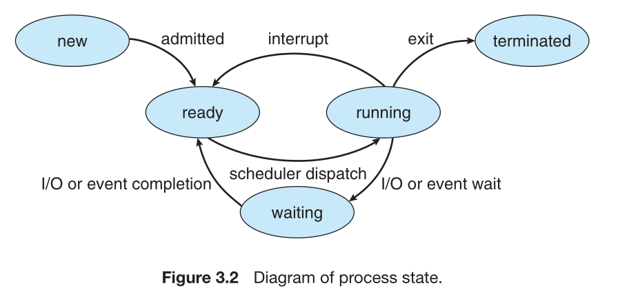
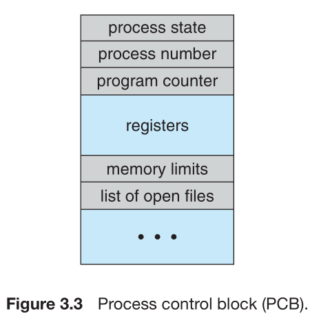

Process is a program in execution.
Process is the unit of execution and contain of code.
Process stack 包含一些臨時性資料，例如副程式參數, 返回位址,
以及一些臨時變數。
包括一個裝有整體變數的資料區 (Data Section)
Programming counter (用途: 指向下一個要執行的指令)
cpu register
Life cycle of process

處理程序控制區段(Process Control Block,PBC)
作業系統利用PCB紀錄每個處理程序的所有資訊。

PCB包括:
Process ID: 每個id是唯一、不重複的
Process state: ready, running, wait, and suspended
programming counter: 放置下一個要執行的指令位址。
cpu register:
包括: 累加器, index register, stack pointer, 通用暫存器,
條件碼資訊等。 在interrupt發生時，這些狀態資訊連同
programming counter必須保存起來，以便processes往後能夠
繼續運作。
CPU排班資訊: priority of process, the pointer of scheduling queue, 以及其他排班的參數。
記憶體管理資訊:
Base, limit Register, and Contain of page table.
Accounting information.
This information includes the amount of CPU and
real time used, time limits, account numbers,
job or process numbers, and so on.
I/O status information.
This information includes the list of I/O devices
allocated to the process, a list of open files, and so on.
Creation:
一個parent process可以執行 process creation system call
to create child process.
The child process也可以產生他的child process.
建立child process目的在於幫助parent process完成一些小task,
以便parent process去執行其他task.
The child process在執行時，獲取資源的方法可能有1.
直接從operating system拿, 2. 或只限於parent process
所擁有的資源裡拿。
Parent process 可以決定將資源分配給哪個child process
或把資源設定為共享，讓多個child process可以使用(ex.
記憶體、檔案)。
當the child process可使用的資源只限定於parent process 時，
可以防止parent process 產生太多 child processs
使得system負擔過重。
For instance.
當parent process 產生 child process 時, 除了要分配資源,
也可能要向child process 傳遞資料(ex. 要處理的檔案名稱).
parent process 產生child process時,可能有兩種運作模式:
Parent process and child process is running parallelly.